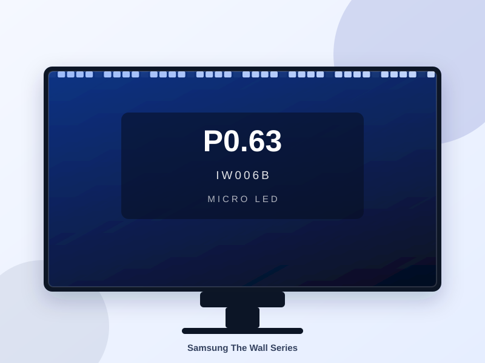
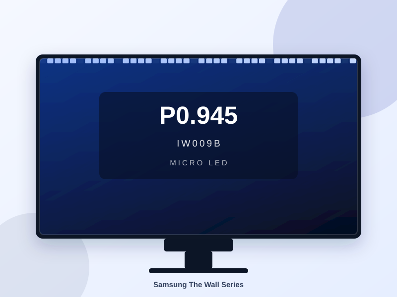
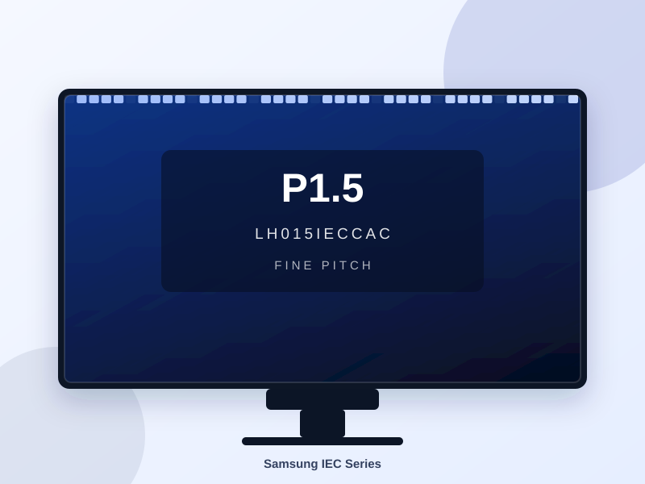

Samsung The Wall Series
Videotron Indoor Samsung The Wall P0.63
IW006B – pitch 0,63 mm dengan teknologi microLED dan pemrosesan warna 20-bit, detail paling halus untuk jarak pandang sekitar 1–2 meter.
Lini videotron indoor Samsung dibagi ke dalam tiga seri — The Wall (microLED), IEC Series (fine pitch), dan IFR Series (modul fleksibel) dengan pilihan pitch P0.63 hingga P4.0. Setiap seri memakai modul LED indoor dengan pemrosesan warna 20-bit maupun dukungan HDR10, ideal untuk lobby, showroom, dan ruang event di Jakarta & Jabodetabek.
Seri microLED premium Samsung dengan pemrosesan warna 20-bit, teknologi Black Seal untuk level hitam yang pekat, dan Ultra Chroma agar warna RGB tampil lebih akurat. Modul tanpa bezel membuat sambungan antar kabinet nyaris tidak terlihat — pilihan untuk lobby utama, showroom premium, dan studio dengan tuntutan kualitas visual tertinggi.

IW006B – pitch 0,63 mm dengan teknologi microLED dan pemrosesan warna 20-bit, detail paling halus untuk jarak pandang sekitar 1–2 meter.
IW008A – pitch 0,84 mm dengan refresh rate hingga 11.520 Hz, titik seimbang antara ketajaman gambar dan kebutuhan showroom maupun studio.

IW009B – pitch 0,945 mm dengan kabinet microLED 16:9, andalan untuk lobby dan ruang presentasi dengan jarak pandang 2–3 meter.
Seri LED indoor fine pitch Samsung dengan tiga pilihan pitch — 0,93 mm, 1,25 mm, dan 1,56 mm. Mendukung HDR10 dan refresh rate tinggi, serta dapat dipasang menempel dinding maupun pada rangka kabinet. Pilihan seimbang untuk ruang meeting, kantor, dan lobby dengan pencahayaan campuran.
LH009IECCAC – pitch 0,93 mm dengan dukungan HDR10, paling detail pada seri IEC untuk jarak pandang sekitar 1,5–2,5 meter.
LH012IECCAC – pitch 1,25 mm dengan kecerahan 600 nits, titik seimbang antara ketajaman gambar dan efisiensi biaya untuk showroom serta ruang meeting.

LH015IECCAC – pitch 1,56 mm dengan HDR10 untuk bentang layar yang lebih luas seperti aula dan hall, jarak pandang nyaman mulai 3 meter.
Seri SMD fleksibel dengan kecerahan tinggi — hingga 2.400 nits pada model P2.5 dan P4.0. Modulnya bisa dipasang datar maupun melengkung mengikuti bentuk bidang, sehingga cocok untuk layar besar di ruang event, atrium, dan area publik dengan pencahayaan sekitar yang terang.
LH015IFRCLS – pitch 1,5 mm dengan kecerahan hingga 1.600 nits dan modul fleksibel, pas untuk layar event dan area publik yang tetap ingin terlihat detail.
LH025IFRCLS – pitch 2,5 mm dengan kecerahan hingga 2.400 nits, andalan untuk panggung dan atrium berukuran besar, jarak pandang mulai 4 meter.
LH040IFRCLS – pitch 4,0 mm dengan kecerahan hingga 2.400 nits, pilihan paling ekonomis untuk layar raksasa berjarak pandang jauh pada acara dan atrium.
Ceritakan ukuran ruang, jarak pandang penonton, dan jenis konten yang akan ditayangkan. Tim kami akan membantu memilih konfigurasi pixel pitch Samsung yang paling sesuai serta menyusun penawaran mengikuti anggaran Anda — tanpa biaya konsultasi.